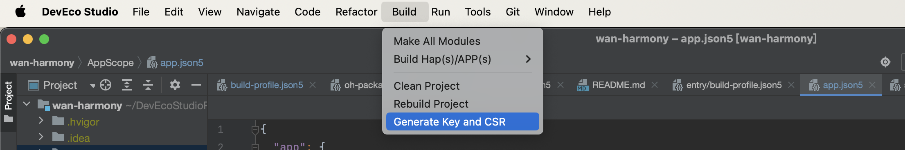

摘要
由于鸿蒙模拟器开发时糟糕的体验，决定搞定鸿蒙真机调试，虽然这个真机调试相对于Android来说有点复杂（这套配置有点类似于苹果的真机测试），但为了开发效率，还是抽时间查阅资料，研究了一下，这里记录一下。
整体过程如下：
使用
DevEco Studio生成证书请求文件；申请应用调试证书和Profile
在
DevEco Studio中配置签名信息
使用DevEco Studio生成证书请求文件
打开DevEco Studio，找到 Build，然后选择 Generate Key and CSR，如下图：

点击之后，弹出如下窗口：
说明：
红色星号部分为必填，下面的 Certificate 部分 按要求至少要填写一个。
Key store file，需要以.
p12结尾，可以生产一个新的 .p12文件，也可以选择一个已经存在的，我这选择新建一个。新建窗口如下：新建key store成功后，会要求填写 Alias，填写Alias 后，certificate 部分选填一个即可，然后点击next，进入csr文件的生成
上面点击next后，会要求创建csr文件，如下图：
创建csr文件完毕后，点击finish，会在选择的目标文件下生成相应的csr文件，这样
.p12文件和.csr文件就都生成好了，就下来就是去华为的 的App Gallery Connect网站上申请应用调试证书和Profile了。
申请应用调试证书和Profile
申请调试证书
用华为账号登录 AppGallery Connect，然后左上角的下拉菜单选择 用户与访问子菜单，点击后，找到左侧的证书管理，点击新增证书，如下图：
上面都填好后，点击提交，会生成相应的调试证书，点击下载，保存至自己电脑目录（位置随意，自己知道就行了）
然后找到左侧的设备管理，添加要真机调试的设备，如下图：
UDID 获取方法
通过华为hdc（类似于Android 的 adb）进入相应的shell环境，然后运行如下命令即可获取UDID：
1 | cd "对应版本的 hdc文件目录"" |
申请Profile
左上角下拉菜单选择我的项目，如果没有，先按要求先新建一个项目。然后往项目中添加应用，添加应用界面如下：
关于应用的包名，可以在项目的 AppScope文件夹下的app.json文件中查看，文件结构如下：
1 | { |
上面的 bundleName 即为 包名
应用添加成功后，点击我的项目，找到添加的应用，然后选择 左边的 HAP Provision Profile，进入该应用的 Profile管理页面，一般新建的应用都需要新建一个profile，按要求新建好了之后，点击下载，保存至本机。这样所有准备工作就都就绪了，接下来就是去Dev-eco Studio中配置签名信息了。
配置签名信息
打开File > Project Structure，在Modules>entry（模块名称）>Signing Configs > debug窗口中，配置指定模块的调试签名信息。
窗口如下：
签名配置成功后，不要忘了打开项目根目录的 build-profile.json5 文件，重新同步下项目，不然签名配置不生效。
这样就完成了鸿蒙真机调试的配置了